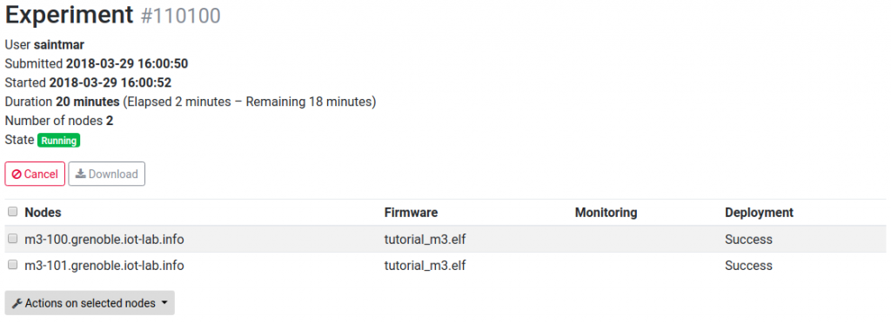

Submit an experiment with M3 nodes using the web portal
Difficulty: Easy
Duration: 20 minutes
Prerequisites: Configure SSH Access
Description: The aim of this first tutorial is to discover the IoT-LAB testbed tools by creating and submitting your first experiment, and then interact with running nodes. You will book two M3 nodes on the Grenoble site, set them up with a sample firmware file, and deploy it on nodes. Once deployed, you will hop onto the ssh frontend to interact with the firmware running on the nodes, read sensor values and send radio packets.
{kind=link}
- Log into the Webportal
- Launch a new experiment
- Download the binary firmware for m3 nodes (source code is available is here)
- Schedule: set an experiment name (no spaces nor funny chars in the experiment name)
- Nodes: Add to experiment (with node properties tab) two nodes with M3 (At86rf231) archi on the Grenoble site
- Add firmware to your nodes selection
- Submit experiment
- Wait experiment state Running in the Schedule dashboard section. After click on experiment details and visualize which nodes you are booked and verify that you have Success in the deployment result
- Connect to the SSH frontend of Grenoble (or of the site where your experiment is running):
my_computer$ ssh <login>@grenoble.iot-lab.info
- Interact with your M3 node.Provided firmwares offer an interaction menu via the serial port of the device. The serial port is available from the ssh frontend through a TCP socket on port 20000. You can use netcat for example, with
nc <device hostname> 20000.<login>@grenoble:~$ nc m3-<id> 20000 IoT-LAB Simple Demo program Type command h: print this help t: temperature measure l: luminosity measure p: pressure measure u: print node uid d: read current date using control_node s: send a radio packet b: send a big radio packet e: toggle leds blinking Type Enter to stop printing this help cmd >
- Test some commands to get sensors measures (t, l, p)
cmd > l Luminosity measure: 7.324219E-1 lux
- Test packet sending
- Open a second terminal to connect to the serial port of another node
- Make one of the nodes send a radio packet:
<login>@grenoble:~$ nc m3-<id1> 20000 cmd > s cmd > radio > Packet sent
- Check that the other node has received the radio packet:
<login>@grenoble:~$ nc m3-<id2> 20000 cmd > radio > Got packet from A569. Len: 16 Rssi: -66: 'Hello World!: 0'
{kind=link}
{kind=link}
Go further
- Follow the Nodes Serial Link Aggregation tutorial to see how to interact easily with all your nodes
- Follow the command-line Experiment CLI client and Node CLI client tutorials
Practical Tips
- Get M3 UID(s) for Grenoble site
- See documentation here
- Access M3 serial port directly from your computer
- Open a SSH tunnel between your computer and the M3 node
ssh -L 20000:m3-<id>:20000 <login>@grenoble.iot-lab.info
- In another terminal, run
nclocally as if you were on the ssh frontend.nc localhost 20000
- Open a SSH tunnel between your computer and the M3 node